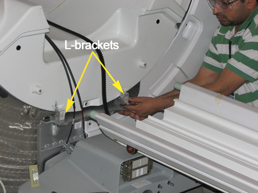

Operating Documentation
Direction 5670000, Rev# 1
Module Version 9.0, Version Date 1/22/10
Operating Documentation |
| ||||
| Strong Magnetic Field! | ||||
| Ferrous materials can become dangerous projectiles in the presence of the magnetic field Produced by the Magnet. | ||||
| Do not Bring any ferromagnetic tools or equipment into the magnet room. |
Move patient table away from the magnet. Manually press [Table Home] sensor on dock and drive LPCA towards rear of bridge.
Remove bridge assembly. See Bridge Removal and Replacement
On the 7-Segment Display version, remove the trim ring pieces and front bezel:
Remove the left trim ring to reveal the front bezel screw. The front bezel is held in place by one (1) screw and four (4) poppers.
Remove the front bezel screw and pop off the bezel.
Remove the right trim ring.
On the In-Room Display version:
Remove the laser light cover, which is held on with two (2) screws and a popper.
The In-Room Display has two (2) front trim rings (see Illustration 3). Remove the trim rings.
Remove the six (6) M10 bolts which attach the front end bell to the arm brackets (see Illustration 4)
Remove the front Body Coil Bias cable(s) and the Body Coil ID cable.
Remove the L-brackets from the vibration bracket. See Illustration 5.
Illustration 5: L-Brackets

| ||||
| The front end bell is heavy. Avoid awkward body positioning. Use proper lifting techniques when moving the front end bell. | ||||
Check microphone cable on end bell as you pull away. There should be enough cable to place end bell on the floor left front of magnet.
Remove the end bell.
Reverse steps to install replacement front end bell. Guide studs, located in the Service Cable Hardware Kit, may be screwed into the top two (2) M10 bolt sockets to assist placing on the replacement front end bell (see Illustration 6). Confirm that the gap between the front end bell and the RF Body Coil is between 2.0 - 2.5 mm.